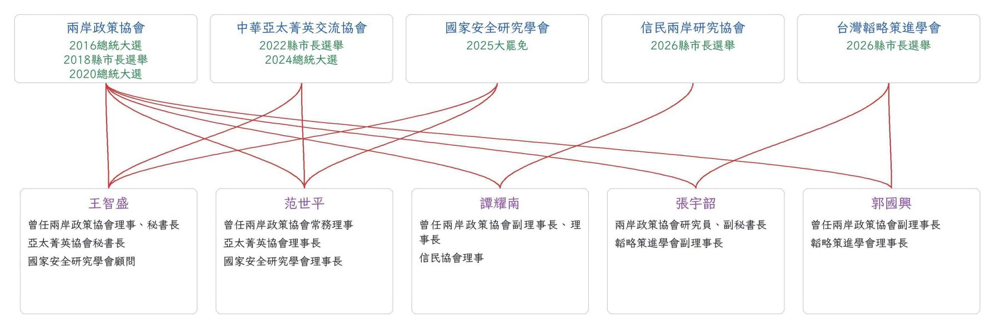

範圍
| 投票日 | 選舉 | 收錄 |
|---|---|---|
| 2016-01-16 | 總統、立委政黨票 | ✅ |
| 2018-11-24 | 六都市長、公投第 7–16 案 | ✅（公投只有 4 案找得到具名民調） |
| 2020-01-11 | 總統、立委政黨票 | ✅（含 2019 全年趨勢） |
| 2020-06-06 | 高雄市長韓國瑜罷免 | ✅（另算，見 §4.5） |
| 2021-10-23／2022-01-09 | 陳柏惟、林昶佐罷免 | ✅（民調幾乎都是陣營委託） |
| 2021-12-18 | 公投第 17–20 案 | ✅ |
| 2022-11-26 | 六都＋新竹市、基隆市長、18 歲公民權修憲複決 | ✅ |
| 2024-01-13 | 總統、立委政黨票 | ✅ |
| 2025-07-26／08-23 | 大罷免 32 案、核三延役公投（第 21 案） | ✅ |
| 2026-11-28 | 九合一：台北、新北、桃園、台中、台南、高雄、基隆、新竹市 | 進行中，收到 11/4；封關 11/18 |
口徑
- 委託方與執行單位分開列：例如「鏡新聞委託、大地民意研究執行」、「美麗島電子報發布、畢肯執行」、「信民協會委託、戴立安設計、畢肯執行」。兩者相同時，執行欄寫「同左」。機構排名兩種都算（§3）。
- 調查方式：純市話／市話＋手機（有比例就寫比例）／純手機／網路固定樣本或簡訊、廣告投放問卷／電話＋網路混合／AI 或 IVR 電訪／面訪。原文沒寫的標「未載明」，不依常識猜；同機構同期推定的會在原列註「推定」。
- 有效化：扣除未表態後，把民調列出的候選人重算為 100%。實際得票率也只取同一組候選人重算，避免民調漏列小黨造成假誤差。
- 差距誤差：（民調第一名 − 第二名）−（實際第一名 − 第二名）。正值代表高估了實際贏家的領先幅度。公投、罷免看同意方。
- 綠藍偏差：（民調 綠 − 藍）−（實際 綠 − 藍）。正值代表偏綠。藍原則上是國民黨候選人，2022 新竹市取主要對手高虹安。公投、罷免依提案陣營判定：2021 四案、核三案、2021–22 兩罷免的同意方算藍，2025 大罷免的同意方算綠。
- 各家最後一份：選舉指投票前 10 天封關之前發布的最後一份。公投法沒有封關，所以公投取投票前最後一份。機構排名只用投票前 60 天內的最後一份。
- 不收：網路自選投票、街訪；只有匿名來源的「內部民調」；委託人匿名者（2022 新竹市上報那份）。陣營、政黨具名公布的會收，但標 †，不列入機構排名。同一次調查拆開公布的市話、手機子樣本，不算「最後一份」，只用來做方法對照（§4.2）。
- 查核程度：各家最後一份大多已回原始報導或機構報告核對。趨勢點多數只來自 zh.wikipedia 民調表，note 標
wiki-only。開票數字來自中選會，或引中選會的維基 infobox。
1. 結論摘要
- 一般誤差：主流機構封關前最後一份，總統選舉的差距誤差中位數約 5–7 點（2016 6.3、2024 4.6；2020 是 14.4，見第 2 點）。地方選舉大很多，六都中位數常在 7–30 點。
- 2016–2022 候選人選舉的民調整體偏綠：60 天內最後一份的綠藍偏差平均，2016 +3.2、2018 +5.2、2020 +13.1、2022 +8.7。2024 是 −1.0，幾乎沒有偏差。
- 純市話是最大的誤差來源： - 候選人選舉中，純市話 50 份，差距誤差中位 13.4，平均偏綠 +10.9。 - 市話＋手機 25 份，中位 4.9，偏綠 +3.1；網路與電話＋網路混合也在 2.5–3.9。 - 同一次調查內的對照也一致：純市話會大幅低估年輕、偏白的選民（§4.2）。2024 偏差消失，與主要機構改用雙底冊的時間點吻合 ⚖️（相關，不等於證明因果）。
- 一面倒的地方選舉，領先者的差距會被高估：2022 高雄 +28.7、台南 +30.4，2018 桃園 +26.8、台南 +32.9。落後陣營的支持者大量「未表態」，有效化後領先者被放大。這類選舉的「方向」通常對，「差距」普遍不可信。
- 2018「韓流」是相反的情形：高雄、台中多數民調低估國民黨候選人（差距誤差 −13.5、−13.6），高雄 17 家只有 8 家猜對贏家。
- 公投最難測，而且要分「綁大選」和「不綁大選」看（§4.7）： - 2019 年修法後，公投改在獨立的投票日舉行。綁大選的 2018 年，10 案投票率約 55%，7 案通過；不綁的 2021 年投票率 41%、2025 年核三案只剩 29.5%，5 案全部沒過。 - 25% 門檻在低投票率下很難跨過：投票率 55% 時，同意票只要占投票者的 45%；41% 時要 61%；29.5% 時要 85%。2025 核三案同意占 74% 仍被門檻擋下。 - 2021 反萊豬，10 家民調全部說同意方會贏，結果不同意方贏。受訪者自稱「一定會投」的比例在 49–62% 之間，實際投票率只有 41%。所有有附投票意願的民調，平均高估投票率 11.6 點（70 份）。 - 2025 核三案的同意比例，三家都在 ±2 點內；但三家都沒有推估投票率或「會投且同意」的比例，民調本身沒有回答「會不會過門檻」。不綁大選的公投，過不了門檻幾乎是預設情況（2021、2025 共 5 案全數未過）。
- 陣營或立場鮮明的委託方，誤差多半偏向自己那邊，兩邊都是： - 偏綠：自由時報 +19.7、中華亞太 +14.7、新台灣國策智庫 +14.2、三立 +14.1、匯流 +13.9、兩岸政策協會 +10.3。 - 偏藍：國民黨委託的 2025 罷免民調平均 −5.6；2021 公投時的十方、遠見、台北智會為 −25～−31。 - 也有長期接近中性的：聯合報 +0.7、TVBS −2.0、ETtoday +2.5、菱傳媒 +2.8（以上為候選人選舉）。
超過 ±40 的點畫在邊界上；滑鼠移到點上可看機構與選舉。
「未載明」是報導沒寫調查方式的民調，其中可能有不少其實是純市話，以淡色表示。純手機只有 3 份，僅供參考。
2. 十年總表：各次選舉
各家封關前最後一份的彙總，完整明細見 完整列表。「最準」「最不準」不含陣營公布的。
2018 公投只有台灣民意基金會一家、2020 罷韓因杯葛投票不可比，未列入。
| 選舉 | 家數 | 方向猜對 | 差距誤差平均（帶號） | 中位（絕對） | 最準 | 最不準 |
|---|---|---|---|---|---|---|
| 2016 總統 | 23 | 23/23 | +5.4 | 6.3 | 世新大學 (+1.8) | 自由時報 (+20.3) |
| 2016 政黨票 | 13 | 13/13 | −5.8 | 8.4 | 台灣指標民調 (−1.8) | 全國意向†（國民黨委託）(−11.1) |
| 2018 台北 | 18 | 17/18 | +9.0 | 7.2 | 旺旺中時 (+0.9) | 趨勢民調 (+22.3) |
| 2018 新北 | 15 | 15/15 | +4.1 | 10.3 | 世新大學 (+1.2) | 聯合報 (+20.7) |
| 2018 桃園 | 10 | 10/10 | +26.8 | 27.6 | 世新大學 (+0.9) | 自由時報 (+40.4) |
| 2018 台中 | 17 | 11/17 | −13.6 | 11.1 | ETtoday (+0.1) | 兩岸政策協會 (−42.2，7 月) |
| 2018 台南 | 3 | 3/3 | +32.9 | 26.5 | TVBS (+21.1) | 蘋果 (+51.1) |
| 2018 高雄 | 17 | 8/17 | −13.5 | 13.2 | ETtoday (−1.6) | 新台灣國策智庫 (−51.7) |
| 2018 公投（4 案，只有台灣民意基金會） | 4 | 3/4 | — | 9.0–56.8 | — | 第 13 案東奧正名方向相反 (+56.8) |
| 2020 總統 | 29 | 25/29 | +5.0 | 14.4 | 旺旺中時 (−0.2) | 自由時報 (+33.3) |
| 2020 政黨票 | 6 | 5/6 | +6.6 | 8.0 | ETtoday (+0.7) | 兩岸政策協會 (+14.5) |
| 2021 公投 17 核四 | 11 | 8/11 | +3.3 | 3.0 | TVBS (+2.1) | 台灣指標民調 (+19.1) |
| 2021 公投 18 萊豬 | 10 | 0/10 | +27.4 | 22.8 | 鉅聞天下／皮爾森 (+4.4) | 遠見 (+54.3) |
| 2021 公投 19 綁大選 | 10 | 1/10 | +8.2 | 10.2 | 鉅聞天下／皮爾森 (+4.4) | 台北智會 (+35.9) |
| 2021 公投 20 藻礁 | 9 | 2/9 | +15.2 | 10.3 | 鉅聞天下／皮爾森 (+2.6) | 台北智會 (+45.4) |
| 2022 台北 | 26 | 20/26 | −4.7 | 6.0 | 震傳媒 (−0.1) | 自由時報 (−17.4) |
| 2022 新北 | 5 | 5/5 | +10.9 | 16.2 | ETtoday (−1.3) | 聯合報 (+21.3) |
| 2022 桃園 | 20 | 15/20 | −8.6 | 6.9 | TVBS (+2.5) | 桃園公正監督民意基金會 (−20.4) |
| 2022 台中 | 10 | 10/10 | +11.7 | 14.1 | 匯流／精確 (+0.3) | 美麗島 (+33.1) |
| 2022 台南 | 7 | 7/7 | +30.4 | 32.2 | 菱傳媒／皮爾森 (+3.9) | 美麗島 (+53.5) |
| 2022 高雄 | 9 | 9/9 | +28.7 | 31.0 | 菱傳媒／皮爾森 (+0.3) | 美麗島 (+45.0) |
| 2022 新竹市 | 12 | 9/12 | −6.2 | 5.2 | 菱傳媒 (−1.1) | 中華亞太 (−13.6) |
| 2022 基隆 | 14 | 8/14 | −13.0 | 12.9 | TVBS (+0.5) | 自由時報 (−24.0) |
| 2022 18 歲複決 | 2 | 2/2 | +10.7 | 10.7 | 山水 (+4.0) | ETtoday (+17.3) |
| 2024 總統 | 32 | 32/32 | +3.1 | 4.6 | 聯合報 (−0.3) | 台灣指標民調 (+17.9，7 月) |
| 2024 政黨票 | 9 | 5/9 | −2.4 | 1.9 | 信傳媒 (+0.8) | 新頭殼 (−14.6) |
| 2025 大罷免（31 區次，不含陣營委託；見 §4.4） | 31 | 24/31 | — | 8.6 | 大地民意（鏡新聞委託） | 國家安全研究學會 |
| 2025 核三公投 | 3 | 3/3 | −0.3 | 1.7 | TVBS (−0.6) | 風傳媒 (−2.1) |
註： - 2016、2020 各家最後一份含少數 30 天以前的舊資料。表中「最不準」如果標了月份，代表那家機構後來沒有再發布。 - 2018 台南、2022 台南／高雄的差距誤差大，主要來自第 4 點的「一面倒」效應。
3. 機構成績單
只計投票前 60 天內的最後一份、非陣營公布的民調，且至少要有 3 次。依差距誤差中位數由小到大排列。綠藍偏差後的括號是次數。
候選人選舉和公投罷免分開計分：公投與罷免的誤差主要來自投票率（誰真的去投），跟候選人選舉是不同的問題，混在一起會讓只做過公投的機構排名失真。
3.1 候選人選舉：依委託／發布方
公投、罷免另列於 3.2。樣本 3–5 次的排名差異不一定有意義。
| 機構 | 次數 | 方向猜對 | 差距誤差中位 | 綠藍偏差平均（次） | 年份 |
|---|---|---|---|---|---|
| ETtoday／東森民調雲 | 13 | 12/13 | 2.5 | +2.5（13） | 2018–2024 |
| 震傳媒 | 3 | 2/3 | 2.9 | −5.3（3） | 2022、2024 |
| 菱傳媒 | 6 | 6/6 | 3.1 | +2.8（6） | 2022、2024 |
| TVBS | 11 | 10/11 | 3.2 | −2.0（11） | 2016–2024 |
| 旺旺中時 | 6 | 5/6 | 3.4 | +1.7（5） | 2018、2020、2024 |
| QuickseeK | 3 | 2/3 | 5.2 | +7.4（3） | 2022、2024 |
| 匯流新聞網 | 4 | 4/4 | 5.2 | +13.9（4） | 2022、2024 |
| 台灣指標民調 | 3 | 3/3 | 5.3 | +4.1（3） | 2016、2022 |
| 信傳媒 | 4 | 3/4 | 5.4 | +8.5（4） | 2018、2024 |
| 蘋果日報 | 8 | 8/8 | 5.4 | +11.8（8） | 2016、2018、2020 |
| 艾普羅 | 3 | 3/3 | 5.9 | +4.0（3） | 2018、2022 |
| 蓋洛普 | 5 | 5/5 | 6.0 | +5.8（5） | 2016、2022 |
| 台灣民意基金會 | 5 | 5/5 | 6.2 | +5.2（5） | 2018–2024 |
| 負數票協會 | 3 | 3/3 | 6.5 | +3.6（3） | 2018、2022 |
| 聯合報 | 11 | 11/11 | 6.9 | +0.7（11） | 2016–2024 |
| 三立 | 10 | 7/10 | 13.3 | +14.1（10） | 2016–2024 |
| 兩岸政策協會 | 4 | 4/4 | 13.3 | +10.3（4） | 2016、2020 |
| 中華亞太菁英交流協會 | 6 | 2/6 | 16.1 | +14.7（6） | 2022、2024 |
| 美麗島電子報 | 8 | 8/8 | 16.1 | +3.7（8） | 2018–2024 |
| 新台灣國策智庫 | 3 | 3/3 | 16.8 | +14.2（3） | 2016、2020 |
| 自由時報 | 8 | 4/8 | 18.9 | +19.7（8） | 2016、2020、2022 |
3.2 不綁大選的公投：依委託／發布方
2021 四案與 2025 核三案。綁大選的公投（2018 只有台灣民意基金會、2022 複決只有兩家）樣本太少，見 §4.7。綠藍偏差由「高估同意方」換算：2021 四案國民黨主張同意、民進黨主張不同意，高估同意方記為偏藍。
| 機構 | 次數 | 方向猜對 | 差距誤差中位 | 綠藍偏差平均（次） | 年份 |
|---|---|---|---|---|---|
| 皮爾森數據 | 4 | 2/4 | 3.7 | −3.6（4） | 2021 |
| ETtoday／東森民調雲 | 4 | 1/4 | 7.3 | −9.8（4） | 2021 |
| 美麗島電子報 | 4 | 2/4 | 8.6 | −3.4（4） | 2021 |
| 台灣民意基金會 | 5 | 2/5 | 8.7 | −9.4（5） | 2021、2025 |
| TVBS | 5 | 2/5 | 10.9 | −8.3（5） | 2021、2025 |
| 遠見 | 4 | 0/4 | 20.4 | −26.7（4） | 2021 |
| 十方民調 | 4 | 0/4 | 27.1 | −25.4（4） | 2021 |
| 台北智會 | 4 | 1/4 | 37.5 | −30.6（4） | 2021 |
- 2021 公投各家普遍高估同意方（國民黨主張的一方），2025 核三案三家都準（誤差 2 點內）。
- 同一家機構在兩類投票的表現可以差很多：TVBS 候選人選舉 3.2，不綁大選公投 10.9；ETtoday 2.5 對 7.3。
罷免另列：罷免雖然也是同意／不同意二選一，但被罷免人和政黨會像選舉一樣動員，投票率（2025 大罷免 47–60%）接近一般選舉，不適合跟不綁大選的公投混算。罷免民調達 3 次以上的只有鏡新聞（大地民意執行），23 區誤差中位 4.6、平均偏同意方 +2.4；逐區比較見 §4.4。
3.3 依執行調查單位
依執行單位重排的完整表在 data/summary.md，以下都是候選人選舉，差異較大的幾家如下：
- 三立：自家執行的 5 次，差距誤差中位 28.4、偏綠 +23.6。委託循證、趨勢、山水執行的幾次就準得多。
- 山水民意研究：替台灣民意基金會、震傳媒、三立、獨盟、新北民進黨團等執行；候選人選舉 4 次（都在 2024）中位 2.9。2018 年替台灣民意基金會做的公投民調誤差很大，見 §4.7。
- 畢肯市場研究：替美麗島（2024 起）、信民協會、震傳媒執行，目前可比對的樣本不足 3 次。
3.4 讀表注意
- 美麗島 2018–2022 的誤差，大多出現在一面倒的南部選舉（台南、高雄差距被高估 45–54 點）；台北、桃園的表現接近平均。美麗島到 2024-04 才改用市話＋手機雙底冊。
- 台灣民意基金會在候選人選舉的誤差中位 6.2；過去混算時被 2018 東奧正名案（方向完全相反，+56.8）拉高。
- 3 到 5 次的樣本很小，排名前後幾名之間的差別不一定有意義。
4. 主題分析
4.1 系統性偏綠，2024 消失
| 年 | 份數 | 綠藍偏差平均 | 中位 |
|---|---|---|---|
| 2016 候選人 | 26 | +3.2 | +4.9 |
| 2018 候選人 | 40 | +5.2 | +3.4 |
| 2020 候選人 | 23 | +13.1 | +14.4 |
| 2021 不綁大選公投 | 32 | −15.2 | −11.3 |
| 2022 候選人 | 57 | +8.7 | +6.7 |
| 2024 候選人 | 23 | −1.0 | −1.6 |
| 2025 大罷免 | 23 | +2.4 | +1.1 |
| 2025 核三公投（不綁大選） | 3 | +0.3 | +0.6 |
- 2020 偏綠 +13 的可能原因：韓國瑜 2019-11-28～29 呼籲支持者拒答民調、改說「唯一支持蔡英文」〔a2 notes〕。政黨票同樣普遍高估民進黨：多數民調估民進黨領先國民黨 8–20 點，實際只領先 0.6 點。
- 2021 公投反過來偏藍：這不是「機構偏藍」，而是投票率問題，見 §4.3。
- 2024 接近 0：TVBS、聯合報、TPOF（市話 70：手機 30）、ETtoday 等主要機構，在 2023 年前後都已採用雙底冊或網路樣本。
4.2 調查方式：市話 vs 手機
只計候選人選舉（總統、政黨票、縣市長），投票前 60 天內最後一份、非陣營公布：
| 調查方式 | 份數 | 方向猜對 | 差距誤差中位 | 綠藍偏差平均 |
|---|---|---|---|---|
| 純市話 | 50 | 40/50 | 13.4 | +10.9 |
| 未載明 | 68 | 62/68 | 7.1 | +5.3 |
| 市話＋手機 | 25 | 22/25 | 4.9 | +3.1 |
| 網路／簡訊問卷 | 13 | 12/13 | 3.9 | +3.5 |
| 電話＋網路混合 | 11 | 11/11 | 2.5 | +3.4 |
| 純手機 | 3 | 3/3 | 1.9 | +3.0 |
罷免與公投另計：2025 罷免的非陣營民調幾乎都是純市話（24 份，中位 5.4）；不綁大選的公投各方式中位 4.4–9.3，「未載明」的 13 份則高達 26.2（多為 2021 遠見、十方、台北智會）。公投的誤差主要來自投票率，跟調查方式的關係不明顯。
同一次調查內的對照，排除了機構差異： - 國民黨委託十方（2023-12-15～28，†）：柯文哲在市話子樣本只有 14.3%，在手機子樣本有 37.4%。賴清德是 29.2 對 23.5，侯友宜是 30.2 對 17.1。 - 匯流 2023-11：市話＋手機版本柯 25.5%，純市話版本柯 18.9%。 - 2024 總統純市話的成績：美麗島低估柯 4.7 點，匯流純市話低估 4.6 點。雙底冊的主流機構，誤差多在 −0.6 到 +3 點之間〔a4 notes〕。
整理者觀點：純市話接觸到的樣本偏年長、偏在家，而這個族群在 2016–2022 剛好偏綠。2024 起年輕選民大量流向柯文哲，純市話就轉成明顯低估白營。 反方：「未載明」那 68 份中，可能有不少其實是純市話，會稀釋上表的差異；而且市話民調集中在 2018–2022 的地方選舉，這幾年本身就有一面倒效應，兩個因素無法完全分開。
4.3 投票率：民調一律高估
- 有附投票意願的 70 份民調中，「會去投」或「一定會投」的比例平均比實際投票率高 11.6 點。
- 2021 公投：各家 49–62% 說一定會投，實際只有 41.09%。民調中同意方領先，是因為全體受訪者裡同意者較多；但真正去投票的人，民進黨動員的不同意方比較多。
- 2022 18 歲複決：ET 推估「一定會投且同意」約 43%，山水推估 46%，實際同意票只占投票權人 29.35%，所以沒過門檻。
- 2025 罷免：各選區自報會投的比例，比實際投票率高 5–20 點。
- 2026 台北：TVBS 辯論後民調中，93% 說會投、80% 說一定會投，TVBS 自己預估投票率 72%。
唯一例外是 2021 罷免陳柏惟（民調自報低於實際）。2021 公投實際投票率 41%，民調 49–62% 說一定會投，同意方的領先因此失真（見 4.3）。
4.4 2025 大罷免逐區
32 案（31 位立委＋新竹市長高虹安）全部否決；其中 24 區有具名民調，8 區沒有（鄭正鈐、丁學忠、林沛祥、黃建賓、游顥、馬文君、林思銘、高虹安）。
✔＝同意票過投票權人 25% 門檻（仍因不同意較多而否決）；＊＝8/23 第二波。徐巧芯的 TVBS 是 3 月、以「會去投票者」為基數。8 案沒有選區民調，未列。
- 大地民意研究（鏡新聞委託，純市話）：涵蓋 23 個選區。平均偏同意方 +2.4，差距誤差中位 4.6，是最完整、也大致最準的一組。但葉元之、徐巧芯兩區民調是同意方領先，結果罷免被否決，方向錯了。
- 台灣民意基金會：罷免區整體偏差，第一波約 +1、第二波約 +3，方向都正確〔a5 notes〕。
- 陣營委託的民調兩邊都偏向自己：罷免方反共護台聯盟平均高估同意 6.4 點，國民黨委託的平均低估 5.6 點〔a5 notes〕。國家安全研究學會的逐區數字見 §5.2。
逐區明細（開票的同意／不同意 % 以有效票計；民調列原始數字，含未表態，括號內是扣除未表態後的同意 %；†＝陣營委託）：
| 被罷免人 | 投票日 | 開票同意 % | 開票不同意 % | 投票率 | 同意占投票權人（✔＝過 25%） | 各家民調 同意／不同意（括號：扣除未表態後同意 %） |
|---|---|---|---|---|---|---|
| 葉元之 | 07-26 | 48.6 | 51.4 | 56.7 | 27.4 ✔ | 鏡新聞／大地 47.3／35.9（57）；反共護台聯盟† 46.1／37.9（55）；國安學會 45.2／38.2（54） |
| 王鴻薇 | 07-26 | 47.0 | 53.0 | 59.6 | 27.9 ✔ | 鏡新聞／大地 40.8／45.4（47）；反共護台聯盟† 47／39.3（54） |
| 羅廷瑋 | 07-26 | 46.1 | 53.9 | 58.1 | 26.7 ✔ | 國民黨／國政基金會† 29.8／36.3（45）；鏡新聞／大地 38／41.2（48）；國安學會 47.3／39.4（55） |
| 徐巧芯 | 07-26 | 45.4 | 54.6 | 60.0 | 27.1 ✔ | 國民黨／風傳媒† 35.8／47.8（43）；TVBS 57／37（61；3 月，以會投票者為基數）；鏡新聞／大地 45.9／42.9（52）；反共護台聯盟† 47.8／37.7（56） |
| 牛煦庭 | 07-26 | 44.9 | 55.1 | 54.9 | 24.5 | 鏡新聞／大地 37.9／45.1（46）；反共護台聯盟† 42.1／33.4（56）；國安學會 39.6／43.6（48） |
| 廖偉翔 | 07-26 | 44.0 | 56.0 | 56.7 | 24.8 | 國民黨／國政基金會† 21／37.2（36）；鏡新聞／大地 33.2／46.4（42）；國安學會 41.1／37.3（52） |
| 洪孟楷 | 07-26 | 43.8 | 56.2 | 53.7 | 23.4 | 鏡新聞／大地 31.6／43.9（42） |
| 廖先翔 | 07-26 | 43.4 | 56.6 | 52.8 | 22.8 | 鏡新聞／大地 34／43.4（44） |
| 羅智強 | 07-26 | 43.1 | 56.9 | 57.7 | 24.8 | 鏡新聞／大地 33.9／53.7（39）；國民黨團／新國會智庫† 34.5／50.9（40）；國民黨／風傳媒† 34.7／55.8（38） |
| 傅崐萁 | 07-26 | 42.9 | 57.1 | 60.1 | 25.6 ✔ | 國安學會／關鍵調查 39.4／40.9（49）；國民黨／艾普羅† 33.9／50.6（40）；國民黨／風傳媒† 33.5／47.6（41）；反共護台聯盟† 32.7／22.8（59；題型可能不同，其他 44.5）；國安學會 41.6／42.8（49） |
| 李彥秀 | 07-26 | 42.8 | 57.2 | 59.1 | 25.2 ✔ | 鏡新聞／大地 33.8／46.5（42） |
| 萬美玲 | 07-26 | 42.7 | 57.3 | 55.8 | 23.7 | 鏡新聞／大地 29／54.1（35） |
| 黃健豪 | 07-26 | 42.7 | 57.3 | 56.0 | 23.8 | 國民黨／國政基金會† 20.2／37.9（35）；鏡新聞／大地 34.2／47.4（42）；國安學會 38／42.9（47） |
| 張智倫 | 07-26 | 41.3 | 58.7 | 56.7 | 23.3 | 鏡新聞／大地 36.3／39.3（48） |
| 涂權吉 | 07-26 | 40.9 | 59.1 | 54.6 | 22.2 | 鏡新聞／大地 29.9／49.1（38）；反共護台聯盟† 30／43.2（41）；國安學會 42.6／41.9（50） |
| 邱若華 | 07-26 | 40.1 | 59.9 | 54.2 | 21.6 | 鏡新聞／大地 29.3／48.2（38） |
| 賴士葆 | 07-26 | 39.2 | 60.8 | 58.6 | 22.9 | 鏡新聞／大地 37.2／46.1（45） |
| 魯明哲 | 07-26 | 38.6 | 61.4 | 55.8 | 21.5 | 鏡新聞／大地 33／49.1（40）；反共護台聯盟† 24.6／51.2（32） |
| 林德福 | 07-26 | 37.9 | 62.1 | 57.3 | 21.6 | 鏡新聞／大地 30.7／47.7（39） |
| 呂玉玲 | 07-26 | 37.9 | 62.1 | 56.1 | 21.1 | 鏡新聞／大地 31.2／50.2（38） |
| 顏寬恒 | 08-23 | 35.5 | 64.5 | 50.3 | 17.7 | 鏡新聞／大地 27.6／58.7（32） |
| 楊瓊瓔 | 08-23 | 34.3 | 65.7 | 49.3 | 16.8 | 鏡新聞／大地 34.9／43.7（44） |
| 羅明才 | 08-23 | 34.1 | 65.9 | 49.4 | 16.7 | 鏡新聞／大地 29.5／43.7（40） |
| 江啟臣 | 08-23 | 32.7 | 67.3 | 50.2 | 16.3 | 鏡新聞／大地 31.4／51.8（38） |
| 陳柏惟（參考，台中第 2 選區） | 2021-10-23 | 51.5 | 48.5 | 51.7 | 26.4 ✔（通過） | TVBS（罷免方刪Q總部委託†）9/13 50.7／24.4（68）；同上 10/4 52.1／20.7（72）；美麗島 10/9 37.2／25.7（59） |
| 林昶佐（參考，台北第 5 選區） | 2022-01-09 | 55.8 | 44.2 | 41.9 | 23.3（同意過半但未達門檻） | 循證（林昶佐陣營委託†）12/29 34.1／34.2（50） |
- 罷免沒有候選人，民調問的是「同意／不同意罷免某立委」，所以每區只有一組同意比例可比。
- 7 區的同意票過了 25% 門檻，但不同意票都比同意票多，所以全部否決：大罷免是輸在「同意沒過半」，不是門檻。
- 以同意比例計（民調同意 % − 開票同意 %）：鏡新聞／大地 23 份平均 +1.2；國安學會 8 份 +6.5；罷免方反共護台聯盟† 7 份 +6.5；國民黨委託† 8 份 −3.9。兩邊陣營相關單位各偏自己一側。（上面 a5 notes 的 6.4／5.6 是以差距計，口徑不同。）
其他兩次立委罷免（陳柏惟、林昶佐；已列在上表最後兩列，橘底為參考值）：
- 民調很少，而且大多是陣營委託：陳柏惟案 3 份中 2 份是罷免方委託 TVBS 執行；林昶佐案只有林方自己的內參 1 份。沒有中立媒體自辦的選區民調。
- 陳柏惟案三份都說同意方領先，方向對，但都高估同意方的領先幅度。罷免方公布的「會投且同意」約占選舉人 27–30%，跟實際 26.4% 相當接近。
- 林昶佐案的內參同意、不同意幾乎平手（方向判為錯）；但只看「一定會投」的人，同意 19%、不同意 16.9%（占全體），方向對、低估了雙方的實際票數（23.3%／18.5%）。結果是同意過半、卻差門檻。
4.5 罷韓（2020-06-06）另列
⚠ 國民黨呼籲支持者不要去投票，實際開票的不同意票極少（2.6%），無法反映真實的反對比例。下表紅字的「不同意」數字是依民調比例推算的估算值，不是開票結果。
實際開票：投票權人 2,299,981；投票率 42.14%；同意 939,090 票（占有效票 97.40%、占投票權人 40.83%）；不同意 25,051 票；通過，韓國瑜解職〔中選會〕。
估算方法：假設沒有人杯葛、同意方與不同意方的投票率相同，則不同意票 ≈ 實際同意票 939,090 × 民調（不同意 ÷ 同意）。「估算不同意 %」＝估算不同意票 ÷（實際同意票＋估算不同意票）。
| 發布 | 委託／執行 | 樣本 | 調查方式 | 同意 | 不同意 | 未表態 | 一定會投 | 一定會投且同意（占全體） | 估算不同意票 | 估算不同意 %（占有效票） | 備註 |
|---|---|---|---|---|---|---|---|---|---|---|---|
| 2020-05-26 | 台灣民意基金會 | 1085 | 市話（山水執行） | 56.3 | 28.2 | 11.2 | 47.9 | 35.0 | 約 47 萬 | 33% | 全國樣本，高雄子樣本僅 129 人 |
| 2020-05-25 | 蘋果日報 | 1079 | 市話 | 50.1 | 22 | 27.9 | 39.0 | 36.0 | 約 41 萬 | 31% | |
| 2020-05-25 | 時代力量† | 830 | 陣營公布 | 56.4 | 28.9 | 14.7 | 46.4 | 35.6 | 約 48 萬 | 34% | |
| 2020-05-24 | 寶島通訊 | 1080 | 市話 | 57.3 | 30 | 12.7 | 45.5 | 41.9 | 約 49 萬 | 34% | |
| 2020-05-22 | TVBS | 1237 | 市話 | 73 | 10 | 16 | 51 | 34 | 約 13 萬 | 12% | 以有投票意願者為基數；只算一定會投者，同意占全體 34% |
| 2020-05-19 | 台灣基進† | 1072 | 陣營公布 | 54.4 | 26.5 | 19.0 | 34.5 | 31.9 | 約 46 萬 | 33% | |
| 2020-05-11 | 蘋果日報 | 1082 | 未載明 | 65 | 20.4 | 14.6 | 50.2 | 37.3 | 約 29 萬 | 24% | |
| 2020-05-05 | 寶島通訊 | 1090 | 未載明 | 55.1 | 32 | 12.9 | 47.5 | 36.0 | 約 55 萬 | 37% | |
| 2020-04-20 | 時代力量† | 805 | 陣營公布 | 52.1 | 35.2 | 12.7 | 43.6 | 33.0 | 約 63 萬 | 40% | |
| 2020-03-20 | 新台灣國策智庫 | 1087 | 市話 | 59.5 | 34.5 | 6.0 | 51.2 | 39.5 | 約 54 萬 | 37% | |
| 2020-02-11 | TVBS | 1213 | 未載明 | 53 | 32 | 16.0 | 44.0 | 34.8 | 約 57 萬 | 38% | |
| 2020-01-17 | ETtoday／東森民調雲 | 1768 | 手機簡訊網路問卷 | 63.4 | 33.2 | 3.4 | — | — | 約 49 萬 | 34% | |
| 2020-01-15 | TVBS | 1030 | 未載明 | 53 | 32 | 15.0 | — | — | 約 57 萬 | 38% | |
| 2020-01-14 | 台灣指標民調 | 1072 | 市話 | 58.5 | 29.8 | 11.7 | 65.1 | 58.2 | 約 48 萬 | 34% |
- 依各家民調推算，若國民黨支持者照常投票，不同意票約在 13–63 萬之間，占有效票約 12–40%（TVBS 5/22 以有投票意願者為基數，已反映部分杯葛，所以最低；其餘多在 31–38%）；即使如此，同意票仍過半、也遠高於 25% 門檻（574,996 票），罷免結果不會改變。
- 以「一定會投且同意」占全體比較實際同意票占投票權人（40.83%）：寶島通訊 41.9% 最接近，其他家多低估 5–9 點；台灣指標 1 月的 58.2% 高估最多。
- 因為杯葛投票，同意對不同意的比例不列入 §2 的誤差計算。
- †＝陣營公布（時代力量、台灣基進）。
4.6 2019：反送中前後的翻轉（2020 總統趨勢）
| 時間 | 代表數字 | 事件 |
|---|---|---|
| 2018-11-24 | — | 九合一國民黨大勝、韓流起 |
| 2019-01 | 全國民調還沒把韓國瑜當成總統人選；TVBS、美麗島「蔡朱柯」情境柯文哲領先，蔡英文墊底（15%、19%） | 1/2 習近平談話，蔡強硬回應 |
| 2019-02-20 | TVBS 韓 54、蔡 25 | 韓流高峰 |
| 2019-06-24 | TVBS 首次出現蔡 50、韓 36 | 6/9 反送中百萬人遊行、6/16 二百萬人 |
| 2019-07～08 | 韓小幅領先 | 7/15 韓國瑜贏得國民黨初選 |
| 2019-09 起 | 蔡穩定領先 | 9/16 郭台銘不參選、香港抗爭持續 |
| 2020-01-11 | 實際蔡 57.13、韓 38.61 | — |
完整民調與事件見 完整列表 的 2020 段。
4.7 公投：綁大選 vs 不綁大選
2019 年公投法修正後，全國性公投改在固定的獨立投票日（八月第四個星期六，兩年一次），不再跟選舉同一天。2021 年那次因疫情從 8/28 延到 12/18。
2022 18 歲公民權複決（綁大選，投票率 59.1%、同意 53.0%）是修憲複決，門檻是選舉人半數，不適用這條線，未畫入。
| 投票 | 日期 | 是否綁大選 | 投票率 | 同意占有效票 | 同意占投票權人 | 結果 | 沒過的原因 |
|---|---|---|---|---|---|---|---|
| 2018 第 7–12、16 案（7 案） | 2018-11-24 | 綁九合一 | 54.5–55.8% | 59.5–79.0% | 29.8–40.3% | 通過 | — |
| 2018 第 13 案（東奧正名） | 2018-11-24 | 綁九合一 | 55.9% | 45.2% | 24.1% | 不通過 | 不同意較多，也差一點過門檻 |
| 2018 第 14、15 案 | 2018-11-24 | 綁九合一 | 55.3–55.4% | 32.7–34.0% | 17.1–17.8% | 不通過 | 不同意較多 |
| 2022 18 歲公民權複決 | 2022-11-26 | 綁九合一 | 59.1% | 53.0% | 29.4% | 不通過 | 修憲複決門檻是選舉人半數，不是 25% |
| 2021 第 17–20 案 | 2021-12-18 | 不綁 | 41.1% | 47.2–49.0% | 19.2–19.9% | 不通過 | 不同意較多，也未達門檻 |
| 2025 第 21 案（核三） | 2025-08-23 | 不綁（與 7 區罷免同日） | 29.5% | 74.2% | 21.7% | 不通過 | 只差門檻 |
| 2025 大罷免 32 案（供對照，非公投） | 2025-07-26、08-23 | 罷免，性質近選舉 | 46.7–60.1% | 30.7–48.6% | 14.2–27.9% | 全部否決 | 全部不同意較多；7 區有過門檻 |
門檻與投票率：同意票要達投票權人 25%，等於「同意占投票者的比例」至少要有 25 ÷ 投票率。投票率 55% 時是 45%，41% 時是 61%，29.5% 時是 85%。不綁大選又沒有動員時，投票率低，門檻就變得很難跨過。
民調能不能預測過門檻：不綁大選時，同意比例本身不是重點，要看的是「一定會投、而且投同意」占全體的比例，再跟 25% 比：
| 案 | 實際同意占投票權人 | TVBS 12/16 | ETtoday 12/08 | 時代力量† 12/04 |
|---|---|---|---|---|
| 2021 第 17 案 核四 | 19.2% | 23% | 27.8% | 22.8% |
| 2021 第 18 案 萊豬 | 19.9% | 24% | 34.4% | 31.0% |
| 2021 第 19 案 綁大選 | 19.9% | 25% | 29.2% | 27.9% |
| 2021 第 20 案 藻礁 | 19.7% | 23% | 28.1% | 25.1% |
| 2022 18 歲複決（門檻 50%） | 29.4% | — | 43.4%（10/31） | 壯闊台灣聯盟† 45.8%（10/25） |
- 這個指標所有民調都高估，但 TVBS（高估 3–5 點，四案都估在門檻上下）明顯比 ETtoday（高估 8–15 點，四案都估過門檻）準。
- 2025 核三案的三家民調都沒有公布這個指標，只有同意比例，所以無從檢驗民調能不能預測過門檻。投票前已有分析指出未綁大選、能否跨過門檻「仍有變數」〔遠見〕。
- 2018 綁大選的公投只有台灣民意基金會發布同意／不同意民調（4 案），沒有投票意願題可比。
制度背景： - 2017 年公投法修正，門檻從「投票率過半」降為「同意票達投票權人 25%」；2019 年再修正，公投改在固定的獨立投票日（八月第四個星期六，兩年一次），不與選舉同日，25% 門檻保留。 - 一般選舉有候選人和政黨動員催票，綁大選的公投可以搭上這股投票率；不綁大選的公投沒有這個效果。罷免不同：被罷免人的去留由票數決定，本人和政黨會全力動員，性質接近一般選舉，所以 2025 大罷免投票率 47–60%，不能拿來當公投的對照。 - 行政院曾提出只適用於全國性公投的「移轉投票」不在籍投票草案（2021 年提出、屆期不續審後再送）；國民黨團另提含海外通訊投票的版本，民進黨團質疑有中共介選風險。兩方對範圍有分歧，就查到的資料尚未完成立法〔台灣英文新聞〕。 - 歐洲理事會威尼斯委員會的《公投良好實務守則》原則上建議不設門檻：投票率門檻會讓反對方改成呼籲不投，等於把棄權算成反對〔Carter Center 摘錄〕。 - 各國做法不一：瑞士常態舉行獨立的全國公投，沒有投票率或同意票門檻；義大利的廢止型公投要求過半選民投票，常因投票率不足而無效。
整理者觀點： - 不綁大選的公投，民調要另外看投票意願與「一定會投且同意」的比例，同意比例本身參考價值有限。 - 公投不綁大選又保留 25% 門檻，等於把結果推向「維持現狀」：投票率 30–40% 時，同意方要拿到六到八成以上才過得了。若要維持獨立投票日，取消或降低門檻是較一致的設計；若要保留門檻，綁大選較合理。 反方與限制： - 門檻的用意是避免低投票率下，由少數積極動員的一方決定全國議題；取消門檻也有這個風險。 - 2021 四案即使沒有門檻也不會過，因為不同意票本來就比較多；真正被門檻擋下的只有 2025 核三一案。 - 不綁大選的全國性公投目前只有 2021、2025 兩次、5 案，樣本很少。
5. 發布團體關聯（FB 流傳圖查核）
來源：2026-11 在 Facebook 流傳的一張關係圖截圖，原貼文作者與網址未查到。

5.1 圖的主張與查核
圖的主張：兩岸政策協會（2016、2018、2020）、中華亞太菁英交流協會（2022、2024）、國家安全研究學會（2025 大罷免）、信民兩岸研究協會（2026）、台灣韜略策進學會（2026），由王智盛、范世平、譚耀南、張宇韶、郭國興五人串連。
- 各團體在標示年份都發過選舉或罷免民調：圖上 8 組全部 ✅。
- 人物職稱：15 項中 ✅ 10、⚖️ 3、❓ 2，沒有反證。
- ✅ 王智盛：兩岸政策協會秘書長、亞太菁英秘書長。內政部 2023 年資料把他列為亞太菁英理事長，跟新聞寫的秘書長不一致，任期不明。
- ✅ 范世平：亞太菁英理事長、國安學會理事長。
- ✅ 譚耀南：兩岸政策協會理事長（內政部名冊第 3 屆）。
- ✅ 張宇韶：兩岸政策協會研究員、副秘書長，韜略副理事長。
- ✅ 郭國興：兩岸政策協會副理事長，韜略理事長。
- ⚖️ 王智盛當理事、范世平當常務理事、譚耀南當副理事長：三項都只見於一篇轉貼協會名單的個人部落格。
- ❓ 王智盛是國安學會顧問：只查到他出席過座談，報導沒寫職務。
- ❓ 譚耀南是信民協會理事：查無。信民公開出現的人只有理事長黃清龍和戴立安。
- 「接力換殼」的畫法 🚫 會誤導：這些團體是同時並存的。亞太菁英 2003 年就立案，比兩岸政策協會（2014）還早；兩岸政策協會到 2026 年仍在運作，現任理事長洪耀南；亞太菁英 2026-08 也還在發民調。
- 圖上沒畫、但更直接的利益關聯：兩岸政策協會 2016 年的民調，委託決策民調中心執行，該中心總經理洪耀南同時是協會秘書長。
- 政治淵源（具名來源）：
- 兩岸政策協會：創會理事長童振源曾任陸委會副主委；理事邱垂正現任陸委會主委；洪耀南曾任蔡英文主席特助。
- 亞太菁英：理事王閔生是民進黨籍台北市議員。
- 韜略：媒體稱「台派智庫」，副秘書長張銘祐是民進黨中執委。
- 信民：黃清龍否認跟民進黨有關，但不公開資金來源；黃清龍說跟曹興誠私交好、曹與協會無關（風傳媒 2026-10-21）；曹興誠曾在 2019-12-25 成立大會演講（中央社）。
可成立的較窄版本：
王智盛、范世平、郭國興、張宇韶等與民進黨有具名淵源的兩岸學者，在兩岸政策協會、亞太菁英、國安學會、韜略四個並存的團體名下發布選舉民調，四人都有可證的跨團體職務。信民協會沒有證據顯示屬於同一網絡。
5.2 這幾個團體的歷次誤差
同期其他機構同樣不含陣營公布的民調。純市話本身在 2016–2022 就偏綠（見 §4.2），這幾個團體多用純市話。
| 選舉 | 團體（執行） | 調查方式 | 距投票 | 差距誤差 | 綠藍偏差 | 方向 |
|---|---|---|---|---|---|---|
| 2016 總統 | 兩岸政策協會（決策民調） | 市話 | 11 天 | +12.2 | +12.2 | ✔ |
| 2016 政黨票 | 兩岸政策協會（決策民調） | 市話 | 13 天 | −5.4 | −5.4 | ✔ |
| 2018 台中 | 兩岸政策協會 | 未載明 | 116 天 | −42.2 | +42.2 | ✘ |
| 2020 總統 | 兩岸政策協會 | 市話 | 11 天 | +19.8 | +19.8 | ✔ |
| 2020 政黨票 | 兩岸政策協會 | 市話 | 11 天 | +14.5 | +14.5 | ✔ |
| 2022 台北 | 中華亞太 | 市話 | 16 天 | −11.9 | +11.9 | ✘ |
| 2022 桃園 | 中華亞太 | 市話 | 12 天 | −18.6 | +18.6 | ✘ |
| 2022 基隆 | 中華亞太 | 市話 | 29 天 | −18.5 | +18.5 | ✘ |
| 2022 新竹市 | 中華亞太 | 未載明 | 54 天 | −13.6 | +13.6（沈 vs 高） | ✘ |
| 2022 高雄 | 中華亞太 | 市話 | 17 天 | +27.2 | +27.2 | ✔ |
| 2024 總統 | 中華亞太 | 市話＋手機 | 17 天 | −1.6 | −1.6 | ✔ |
| 2025 罷免 7 區 | 國家安全研究學會 | 市話 | 71–115 天 | +5.5～+18.9 | 同 | 3/7（涂權吉、廖偉翔、羅廷瑋、葉元之四區錯） |
| 2026 台北、新北、台中 | 信民協會（畢肯） | 市話＋手機 | — | 未開票 | — | — |
| 2026 台北 | 韜略（窩窩科技 AI 電訪） | 市話＋手機 | — | 未開票 | — | — |
整理者觀點：這群團體 2016–2022 年的民調一致偏綠，2022 年 5 場地方選舉錯了 4 場，2025 罷免 7 區錯了 4 區。但 2024 年中華亞太改用雙底冊後，誤差只有 −1.6，屬於主流水準。 反方： - 這段期間的純市話民調整體都偏綠（§4.2），自由時報、三立、匯流等跟這群人無關的單位，偏差也同樣大，甚至更大。 - 「偏綠」不能直接推論為刻意操作。 - 國安學會那幾份是投票前 2–4 個月做的，還要再扣掉時間因素。
5.3 對稱檢查
- 藍營有立場明顯、但始終用同一個名字發布民調的單位：台灣競爭力論壇、新國會智庫（羅智強）。國民黨委託民調的誤差，見 §4.4 和 2016 全國意向。
- 「同一批人跨好幾個不同名稱的團體、輪流掛名發民調」這個特徵，藍白兩邊都沒找到具名來源。這是沒查到，不代表不存在。
6. 2026 九合一（進行中，截至 11/4）
封關 11/18；開票後補上實際結果，並重算各家誤差。下表是各委託方 9 月以後的最新一份。
6.1 台北市長（蔣萬安 vs 沈伯洋）
9 月前只有 TVBS 5/26 一份（蔣 +28.0），未畫入。開票後會補上實際結果，並計算每家的誤差。
| 發布 | 委託方 | 執行 | 調查方式 | 樣本 | 蔣 | 沈 | 差（蔣−沈） | 該委託方歷史差距誤差中位／綠藍偏差 |
|---|---|---|---|---|---|---|---|---|
| 05-26 | TVBS | 同左 | 電訪 | — | 58 | 30 | +28 | 3.3／−2.0 |
| 09-22 | 信民協會 | 畢肯（戴立安設計） | 市話 752＋手機 324 | 1,076 | 41.7 | 40.5 | +1.2 | 無紀錄 |
| 10-08 | TVBS | 同左 | 電訪 | — | 49 | 41 | +8 | 3.3／−2.0 |
| 10-20 | 信民協會 | 畢肯 | 市話 753＋手機 322 | 1,075 | 33.3 | 50.3 | −17.0 | 無紀錄 |
| 10-22 | 震傳媒 | 同左 | 電訪 | — | 39.0 | 42.8 | −3.8 | 2.9／−5.3（3 次） |
| 10-27 | ETtoday | 東森民調雲 | 網路固定樣本 | 1,462 | 48.6 | 41.1 | +7.5 | 4.5／+2.5 |
| 10-28 | 聯合報 | 同左 | 市話＋手機 | 1,115 | 41 | 45 | −4 | 6.9／+0.7 |
| 11-01 | TVBS（辯論後） | 同左 | 電訪 | 1,747 | 46 | 42 | +4 | 3.3／−2.0 |
| 11-02 | 韜略策進學會 | 窩窩科技 | AI 電訪，市話 884＋手機 552 | 1,436 | 35.3 | 52.6 | −17.3 | 無紀錄（見 §5） |
| 11-02 | ETtoday（辯論後） | 東森民調雲 | 網路固定樣本 | 1,965 | 52.0 | 40.7 | +11.3 | 4.5／+2.5 |
- 同一週內，各家結果從沈 +17.3 到蔣 +11.3，相差 28.6 點，遠超過抽樣誤差，只能用方法或樣本不同來解釋。
- 2022 北市各家平均低估蔣萬安的領先 4.7 點。
- 有長期紀錄、偏差也小的 TVBS、聯合報、ETtoday，目前的區間是蔣 +11 到沈 +4。
- 整理者觀點：沒有歷史紀錄的信民、韜略兩家，跟其他家差距最大，在三個城市都比同期其他民調明顯偏綠（見 6.2）。等開票後才能驗證。
- 反方：洋流現象如果是真的，過去的機構偏差未必適用今年；2022 的偏差方向也不能直接套到 2026。
6.2 其他縣市（9 月後各委託方最新一份）
| 縣市 | 發布 | 委託方 | 執行 | 調查方式 | 數字 |
|---|---|---|---|---|---|
| 新北 | 09-21 | 震傳媒 | 山水 | 市話 | 李四川 37.1、蘇巧慧 38.2 |
| 新北 | 10-01 | 民進黨新北議會黨團† | 山水 | 市話 | 李 34.5、蘇 39.1 |
| 新北 | 10-03 | 鉅聞天下 | 皮爾森 | 網路（DMP 投放） | 李 45.74、蘇 45.18 |
| 新北 | 10-07 | 國民黨新北議會黨團† | TVBS | 電話（未載明） | 李 42.6、蘇 35.9 |
| 新北 | 10-14 | 信民協會 | 畢肯 | 市話 750＋手機 323 | 李 30.0、蘇 43.1 |
| 桃園 | 09-22 | 新台灣國策智庫 | 同左 | 市話 | 張善政 47.0、黃世杰 25.9 |
| 桃園 | 11-04 | ETtoday | 東森民調雲 | 網路固定樣本 | 張 47.4、黃 36.0 |
| 台中 | 10-04 | 年代 | 同左 | 未載明 | 江啟臣 37.3、何欣純 31.3 |
| 台中 | 10-06 | 台中市信賴台灣之友會 | 循證 | 電話（未載明） | 江 34.3、何 32.4 |
| 台中 | 11-02 | 國民黨台中議會黨團† | 佛光大學 | 市話 | 江 38.3、何 28.1 |
| 台中 | 11-03 | 信民協會 | 畢肯 | 市話 752＋手機 325 | 江 30.4、何 41.1 |
| 台南 | 10-20 | 凱達格蘭基金會 | 趨勢 | 市話 | 陳亭妃 59.4、謝龍介 22.6 |
| 高雄 | 10-30 | ETtoday | 東森民調雲 | 網路固定樣本 | 賴瑞隆 43.2、柯志恩 43.1 |
| 高雄 | 11-01 | 聯合報 | 同左 | 市話＋手機 | 賴 40、柯 33 |
| 高雄 | 11-02 | 鋒燦 | 全方位市調＋台大動態民意平台／創市際 | 市話 1,014＋網路 810 | 賴 47.8、柯 27.4 |
| 基隆 | 09-21 | 芋傳媒 | 山水 | 未載明 | 謝國樑 38、童子瑋 34.2 |
| 基隆 | 10-16 | 國民黨基隆市黨部† | 全國公信力 | 未載明 | 謝 41.3、童 35.7 |
| 基隆 | 10-23 | 鏡新聞 | 大地民意 | 市話 | 謝 36.3、童 37.0 |
| 基隆 | 10-24 | 謝國樑競辦† | 雨晴 | 市話 | 謝 40.5、童 33.2 |
| 新竹市 | 09-16 | ETtoday | 東森民調雲 | 網路固定樣本 | 高虹安 48.6、莊競程 21.2 |
| 新竹市 | 09-22 | 匯流 | 同左 | 市話 | 高 49.5、莊 25.7 |
| 新竹市 | 11-03 | 新頭殼 | 循證 | 電話（未載明） | 高 38.1、莊 36.1 |
- 陣營委託的兩邊都偏自己：國民黨委託的在新北、台中、基隆都是藍領先 5.6–10.2 點；民進黨新北黨團委託的是綠領先 4.6 點。
- 台南、高雄可以參照過去「一面倒」的經驗（§1 第 4 點）：純市話、陣營相關單位估出的大差距，過去多半被高估。
7. 主要缺口
- 2018 公投：第 7、8、11、12、15、16 案（含以核養綠）找不到封關前有具名機構發布的同意／不同意民調。
- 2019-01：還沒有「蔡 vs 韓」的全國民調，最早的是 2018-12-20 新台灣國策智庫。
- TVBS：2022 地方選舉的報告只寫「電話後四碼隨機」，沒有提到手機，所以標「未載明」。TVBS 的 PDF 一律回 403。
- 台灣指標、新台灣國策智庫、世新：2020、2024 年的封關前最後一份，有幾家沒找到。
- 2022 新北：只有 5 家。基隆最後一份是 10/26。
- 待確認：2022 北市「台灣民意與政策顧問」2022-03 那筆的來源，實際是中華傳播管理學會 2022-02-18～19 的調查，機構與日期需要更正（不影響最後一份）。
- 2025 罷免：鄭正鈐、丁學忠、林沛祥、黃建賓、游顥、馬文君、林思銘、高虹安 8 案沒有選區民調；傅崐萁案的國安學會數字，自由時報文內有三組不一致的數字，CSV 收 39.4／40.9。
- 2026：台南秋季只有一份，桃園只有兩份；封關前還會有新民調，11/18 後要再補一次。
- 開票數字：2016、2018 的開票數字只核到維基（引中選會）。2024 政黨票民進黨票數有 4,984,060 和 4,982,062 兩種說法，待用中選會資料核對。